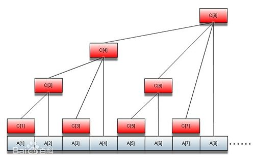

Misha and Permutations Summation
此题为 CF 上的一道中等难度题。题目的原文见这里。用中文简单说一下吧：给定0到N-1的两个排列，求这两个排列的“和”。之所以会有“和”的概念出现，是因为排列的大小可以依据字典序确定。
所以，解决这个问题需要的两个关键步骤是：根据排列确定字典序大小；根据字典序大小还原排列。
一个排列和其字典序大小是有某种确定关系的。Factorial number system 就这种关系给出了理论支持。这种关系，是一种可以一一对应并且互相转换的关系。比如说，当 N=3 的时候，所有的排列和其字典序大小关系如下所示：
| 排列 | 字典序大小 |
|---|---|
| 012 | 0 |
| 021 | 1 |
| 102 | 2 |
| 120 | 3 |
| 201 | 4 |
| 210 | 5 |
要完成互相转换的任务，必须借助于 factorial number system。这种 system 和通常的十进制、十六进制很相似，只是把“基”换成了数乘。比如说，如何表示 42，利用 factorial number system？ 4! < 42 < 5!
$$\begin{aligned} 42 & = 1 \times 4! + 3 \times 3! + 0 \times 2! + 0 \times 1! + 0 \times 0! \\ & = (((1 \times 4 + 3) \times 3 + 0) \times 2 + 0) \times 1 + 0 \\ & = 13000_{!} \end{aligned}$$可以看到，首先 42 小于 5!，因此 42 可以由 5 以下的阶乘表示。在拆分的时候，每一位的数字不得大于当前位的阶乘数字。如$13000_{!}$的最高位为 1，1<4。各位看官可以自行拆解几个数字看看。
由此，我们可以把第一个表再增加一项，表示出每一个字典序大小的阶乘数系表示：
| 排列 | 阶乘数系 | 字典序大小 |
|---|---|---|
| 012 | 000 | 0 |
| 021 | 010 | 1 |
| 102 | 100 | 2 |
| 120 | 110 | 3 |
| 201 | 200 | 4 |
| 210 | 210 | 5 |
那么在阶乘系统下表示出来的数字，好像和排列没有明显的联系啊。好像还不如用原始的方法，就是直接从排列计算出字典序大小呢。那么这一过程怎么计算呢，用最原始的思路？比如说我们现在有排列 120。其第一个数是 1，那么在第一个数是 0 的时候就已经有了 2! 次排列。再看第二位，是 2。在 2 的前面已经有了 0 的排列（这时候就要去掉 1 了），所以其在第一位数为 1 的情况下第二位数为 2 的之前的排列有 1! 个。再看第三位，是0，这时候排序就已经确定了，加上先前的所有排列，就是 2!+1!+1=4。鉴于字典序从 0 开始计数，减去 1 即可。
可以看到，在使用原始方法计算字典序的时候，在计算后面的数字的时候要记住前面已经使用了什么数字（看官可以拿一个更大的排列计算一下）。因此，我们如果按照这种思路计算的话，很快就会陷入频繁的大小比较中。
如果我们维护一个从 1 到 N 大小的数组，每个数组元素都是 1，并且再维护一个数组，计算其部分和，就会发现，每一次确定某一位之前出现过的数字等于部分和。如果一个数字被用掉了，将其减一，相应的每一位部分和表示该位之前没有被用掉的数字个数。在阶乘系统下表示的数字的每一位，其物理意义就是部分和。我们就此举一个例子：
数组为(1,1,1)，部分和为(1,2,3)，排列为120。数组从 1 开始计数，为了方便，排列每一位加 1 变成 231.
- 排列第一位数字 2 索引位置对应的部分和为 2，将其记录下来，并把该位减一. 这时候数组为(1,0,1), 部分和为(1,1,2)；
- 排列第二位数字 3 索引位置对应的部分和为 2，将其记录下来，并把该位减一. 这时候数组为(1,0,0), 部分和为(1,1,1)；
- 排列第三位数字 1 索引位置对应的部分和为 1，将其记录下来，并把该位减一。
我们记录下来的部分和表示了在这样一个排序中，当某一位没有采用该数字的时候可选择的数字个数。由于排列已经确定，我们把记录下来的部分和减一，变成 110。这样，通过部分和，我们就可以很快计算出排列对应的阶乘系统中的数字。看官可以自己拿一个数字计算一下。
现在我们解决了从排列到字典序大小的转换问题，下面要解决的问题就是字典序大小到排列的转换了。如何用传统方法解决？我们可以看到阶乘系统下的数字每一位都有“部分和”的意思。同时排列的每一位数字都是不同的。利用这些信息可以从最高位推出排列。首先阶乘系统下的数字的最高位前面没有被选择的数字，它既是部分和，也是排列中的确定数字。在从排列转化为字典序的过程中，确定的数字被减一，变成不可利用，因此部分和中可以利用的部分和只有第一次出现的某个部分和————因为不可利用的数字其值为 0，在部分和中表示为没有变化。
假设我们现在有字典序 2，其对应的阶乘系统数字为 100，我们将其转化为 211。同样地，我们维护数组(1,1,1)和其部分和(1,2,3)。
- 阶乘系统下数字最高位为 2，部分和中第一个出现 2 的索引位置为 2，记录该位置，并将该位置减一，现在部分和为(1,1,2);
- 阶乘系统下数字次高位为 1，部分和中第一个出现 1 的索引位置为 1，记录该位置，并将该位置减一，现在部分和为(0,0,1)
- 阶乘系统下数字最低位为 1，部分和中第一个出现 1 的索引位置为 3，记录该位置。
看官可以发现，之所以记录下来的索引位置是不重复的，是因为每次选取第一个部分和导致了避开使用过的索引位置。记录下来的索引位置为 213，每一位减一等于 102. 看官也可以自己拿一个数字计算一下。
那么在实际操作中，怎么计算部分和并更新部分和呢？如果一个位置发生了改变，以后所有的部分和都要发生改变。一个直接的方法就是通过维护线段树，但是更方便的方法是使用树状数组。
树状数组并不直接管理部分和，而是管理某一段的和。对一个长度为 N+1 的数组，其相对应的树状数组与之等长，并且有以下性质：树状数组索引为 n 处的元素管理着索引区间为 [n-lowbit(n)+1, n] 处原始数组区间之和。所谓 lowbit，是指某一个数转化为二进制后最低非零位置转化为一个 2 的整数次方的值。其为 x & (-x)。总而言之，这个数组有着与 2 的整数次方相关联的树状组织。

那么要计算部分和，就可以根据这个区间的信息，一块区间一块区间地叠加。可以预见，这样计算部分和的时间复杂度为 O(log n)。
那么如何维护树状数组？我们大可以构建一个原始数组然后在其上构建树状数组，但是鉴于这个问题的部分和是按照索引递增的，而且只在原始数组上执行加减一的操作，我们可以直接构建基于树状数组的加减一操作：在包含当前索引处的区间值加减一即可。可以预见，这样维护树状数组的时间复杂度为 O(log n)。
到了这里，我想解这道题所需要的所有知识已经明确了。下面是我本人写的代码：
总结：
- 排列与指数系统有着一一对应的关系。排列每个数物理意义为部分和索引，指数系统每一位物理意义为部分和。
- 树状数组每一个元素试图管理一个 2 的整数次方的大小的长度的数组，lowbit 运算可以实现这一点。